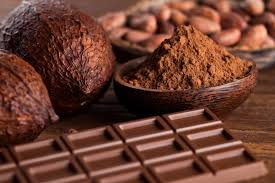

Немного о любимых нами какао и шоколаде ....

"Какао. Напиток богов и владык. "
А также из других источников Интернет
Уважаемый Читатель - после ознакомления с отрывкои из книги
я затрудняюсь - рекомендовать Вам найти и заказать ее бумажное издание или нет, потому как информации об этой книге недостаточно ... Решение за Вами ...
В книге рассказывается история происхождения и распространения в Месоамерике шоколадного дерева и напитка из его плодов. Для индейцев шоколад был не только вкусной пищей. Бобы какао служили аналогом монет при торговле, их передавали в ходе свадебных церемоний, использовали в медицине и для многих других целей. Какое отношение какао-напиток имел к человеческим жертвоприношениям? Почему у ацтеков и майя дерево какао связано с подземным миром? Здесь вы найдете ответы на эти и многие другие вопросы.
Также на этой странице приводятся различные рецепты приготовления какао и различных блюд с использованием какао.
Всякое и разное о какао ... .
- Что такое какао ?
- Что такое какао - порошок ?
- Что такое живое какао ?
- Несколько рецептов какао - напитка
- Еще несколько рецептов какао - напитка
- Некоторые факты о какао ... .
 |
По материалам книги Энди Роу
"Шоколадная диета и косметика. " А также из других источников Интернет Уважаемый Читатель - после ознакомления с отрывкои из книги я затрудняюсь - рекомендовать Вам найти и заказать ее бумажное издание или нет ... Решение за Вами ... |
Немного о шоколаде и его не совсем обычном применении ... .
" Пусть у тебя будет все в шоколаде ! " – говорят человеку, которому хотят пожелать самого хорошего. Почему именно в шоколаде? Да потому, что он давно стал символом роскоши и благополучия. Идеальный продукт, который обладает лечебными свойствами при использовании внутрь и снаружи, ароматен, вкусен и доступен, не оставляет равнодушными детей и стариков, капризных дам и мужественных мужчин…
Шоколадный бум прошел по всему миру и добрался до нас. Положительные свойства какао были известны давно, но только сейчас, с развитием индустрии красоты, интерес к целебным свойствам какао и косметическим продуктам из шоколада несоизмеримо вырос. Сам шоколад стал популярным диетическим продуктом, благоприятно влияющим на некоторые серьезные заболевания. Косметическая продукция из шоколада и какао-порошка все больше и больше завоевывает рынок, а косметологические салоны предлагают своим клиентам множество оздоровительных программ, связанных с кремами и муссами из шоколада.
Хотите узнать о шоколаде всё? Читайте книгу, мы расскажем без утайки о том, что шоколадная диета существует! Чем все-таки полезен шоколад; как организовать шоколадные спа-процедуры дома; самостоятельно изготовить шоколадную косметику.
А еще мы развенчаем мифы о вреде шоколада для фигуры и зубов, научим готовить восхитительные шоколадные лакомства и расскажем интересные факты из истории продукта.
- Что такое шоколад
- Как приготовить горячий шоколад дома
- Шоколад в нашей жизни
- Из истории появления шоколада в Европе
- Кратко о технологии изготовления шоколада и его химическом составе
- Достоинства шоколадной косметики
- Дополнительно о шоколаде и медицине
- Шоколадный массаж
- Шоколадная косметика
- Изготовление шоколадных косметических средств дома
- Шоколадная диета
- Заключение
- Приложения